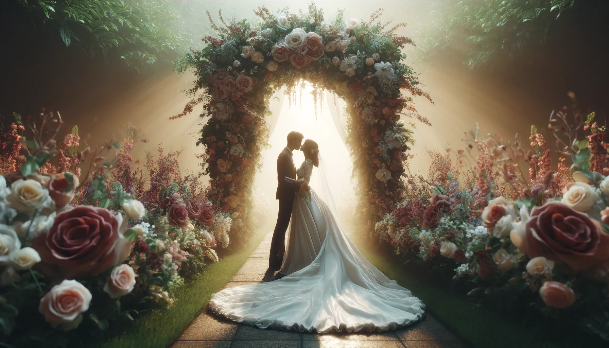
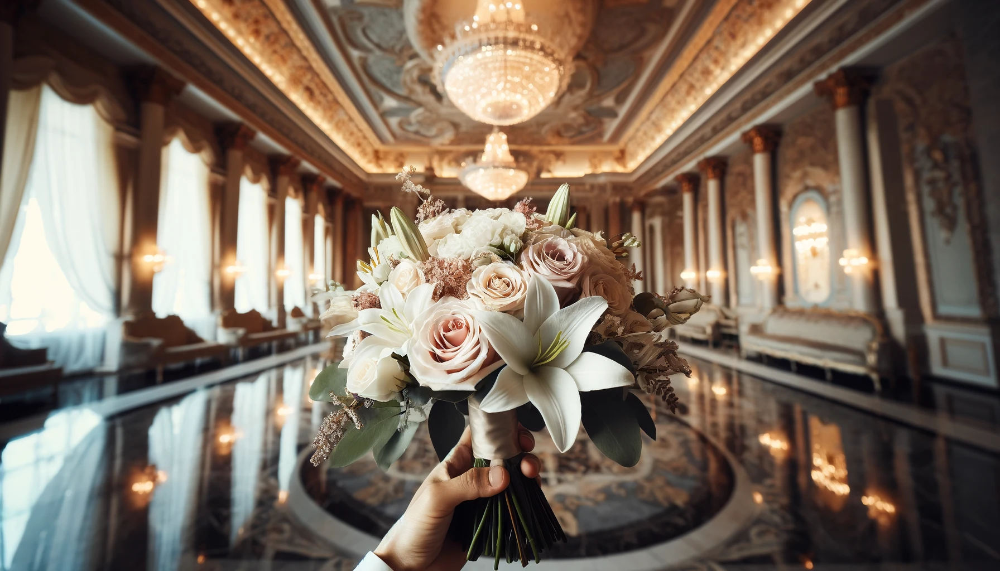
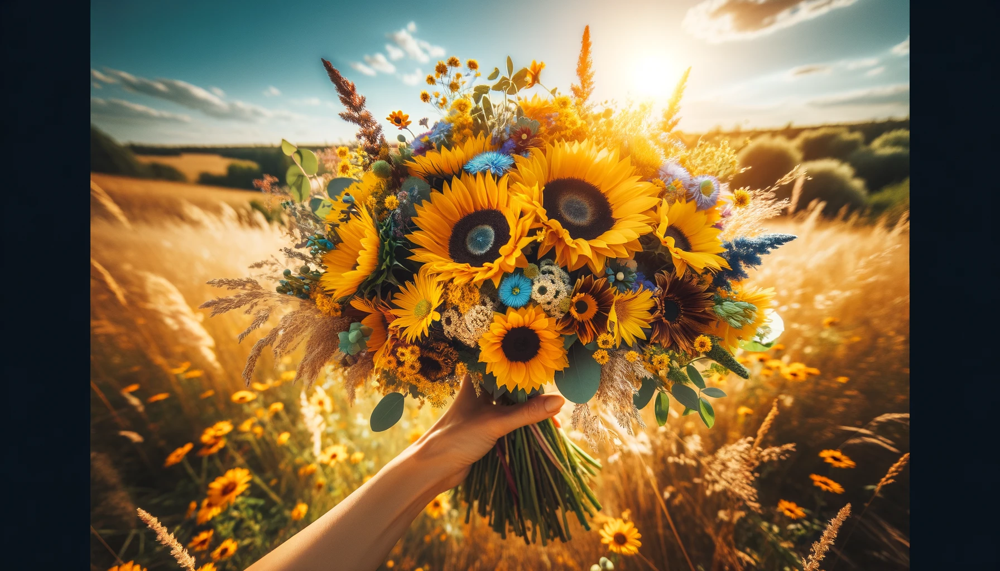
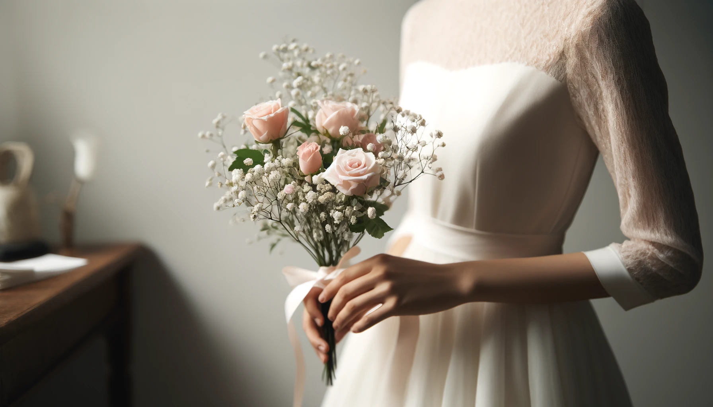
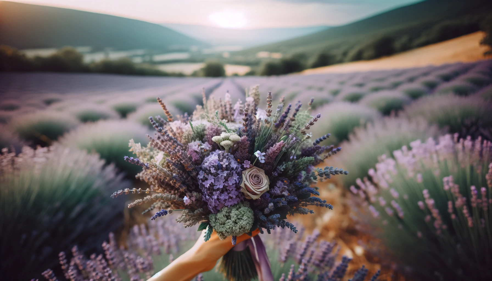
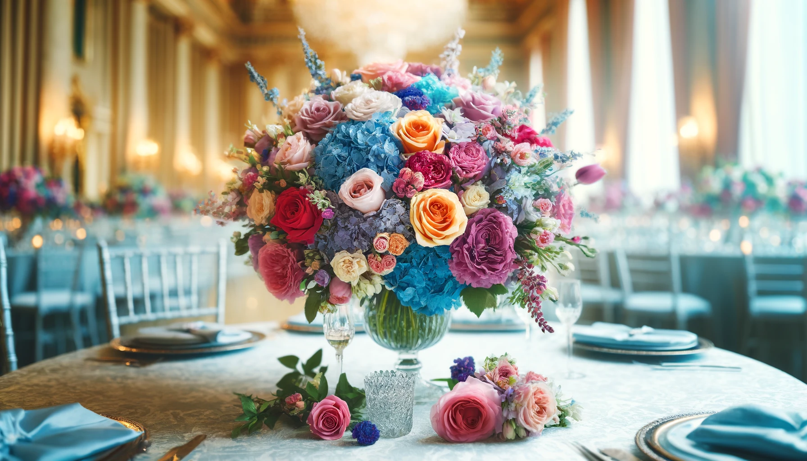
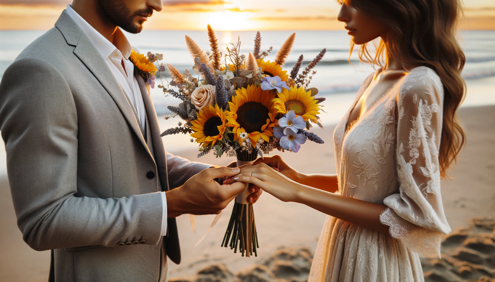

Seven Steps to Selecting the Perfect Wedding Bouquet: A Guide for Every Bride's Big Day
Published on April 16, 2024 | Hiyas Flowershop
Now, let's dive into the seven tips for choosing the ideal wedding bouquet that can help any bride enhance her special day

1. Match Your Theme:
Start by considering the overall theme and color scheme of your wedding. Your bouquet should complement the style and tones of your venue, decorations, and bridal attire. Whether it's rustic, classic, modern, or bohemian, the bouquet should be a seamless extension of your wedding day vision.>

2. Consider the Season:
Choose flowers that are in season during your wedding month. Not only are seasonal flowers more easily accessible and affordable, but they also ensure the freshness and vibrancy of your bouquet. For example, peonies are stunning in spring, while dahlias are perfect for a fall wedding.

3. Size and Scale Matter:
The size of the bouquet should balance with your stature and the design of your wedding dress. A large, lavish bouquet can overwhelm a petite bride or a sleek dress, while a too-small bouquet might look out of place with a grand ball gown.

4. Personalize with Meaning:
Incorporate flowers that have personal significance to you or your relationship. Maybe include blooms from the place you met, or flowers that symbolize a special moment or emotion. This not only adds a personal touch but also tells a story through your bouquet.

5. Play with Texture and Color:
Don’t be afraid to mix textures and colors. Combining various types of flowers can add depth and interest to your bouquet. Consider blending hues that match or complement your wedding palette to create a visually captivating arrangement.

6. Test the Weight:
Incorporate flowers that have personal significance to you or your relationship. Maybe include blooms from the place you met, or flowers that symbolize a special moment or emotion. This not only adds a personal touch but also tells a story through your bouquet.

7. Preserve the Memory:
Think about the longevity of the bouquet. If you want to preserve your bouquet as a keepsake, select flowers that dry well, such as lavender, roses, or hydrangeas. Alternatively, you can opt for a bouquet that can be easily replicated as a lasting arrangement for your home.